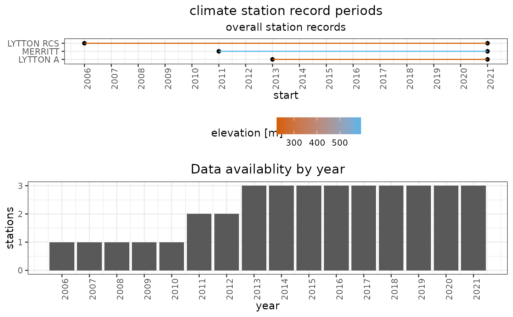
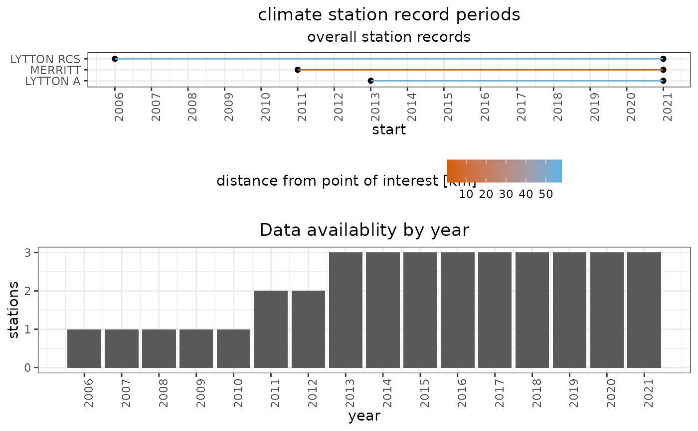
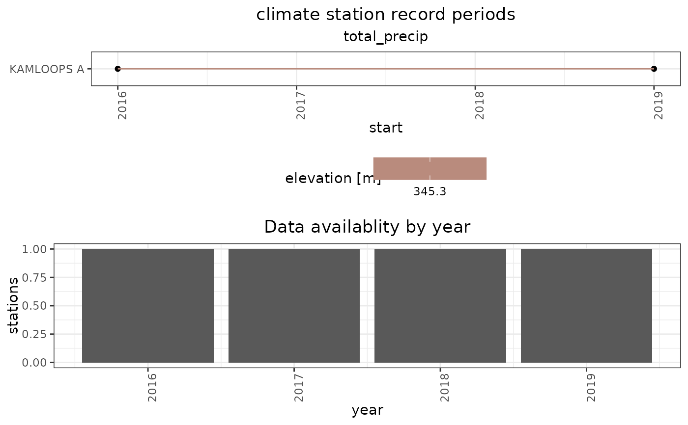

This function plots the length of Environment Canada climate station records, accessed via the weathercan package, to identify periods in which multiple station records overlap.
rvn_met_recordplot(
metadata = NULL,
stndata = NULL,
variables = NULL,
colorby = NULL
)tibble of the station meta-data from weathercan::stations_search()
tibble of the station data from weathercan::weather_dl(). Used in conjunction with variables argument.
if using weathercan::weather_dl(), column names for variables of interest (currently only accepts 1 per call)
column name by which to color station records. Set to 'elev' (elevation) by default. Can be set to
"dist" (distance from coordinates of interest) if supplying weathercan::stations_search results.
returns a 2x1 plot object containing 2 ggplot objects
A chronological horizontal bar plot depicting each station's record period
A vertical bar plot depicting the number of station records available each year
Accepts outputs from either the stations_search() or weather_dl() functions
from the weathercan package and extracts the start and end dates of the record
from each station for plotting.
Outputs from stations_search() indicate when data collection at a station generally
began but do not contain information for specific climate variables and thus should
only be used for a "first look". Plots created with station metadata do not refer to
specific climate variables.
Station records are plotted chronologically on a timeline, and can be colored
according to either the station's elevation (default, works for both types of inputs)
or the station's distance from a point of interest (works only when supplying
stations_search() results as metadata input).
The timeline plot is accompanied by a bar plot counting the number of stations with available data year by year.
Large differences in elevation between stations may point towards consideration for the effect of lapse rates on climate forcings driving a model response.
# load metadata from RavenR sample data
data(rvn_weathercan_metadata_sample)
## code that would be used to download metadata using weathercan
# library(weathercan)
#
# metadata = stations_search(coords=c(50.109,-120.787),
# dist=150, # EC stations 150 km of Merritt, BC
# interval='day'
# )
# metadata = metadata[metadata$start>=2000,] # subset stations with recent data
# metadata = metadata[1:3,] # take only the first 3 stations for brevity
# plot line colours by station elevation
rvn_met_recordplot(metadata=rvn_weathercan_metadata_sample, colorby='elev')

# plot line colours by distance to specified co-ordinates
rvn_met_recordplot(metadata=rvn_weathercan_metadata_sample, colorby='distance')

## load sample weathercan::weather_dl() with single station
data(rvn_weathercan_sample)
# compare records for a specific variable
rvn_met_recordplot(stndata=rvn_weathercan_sample, variables = "total_precip")
